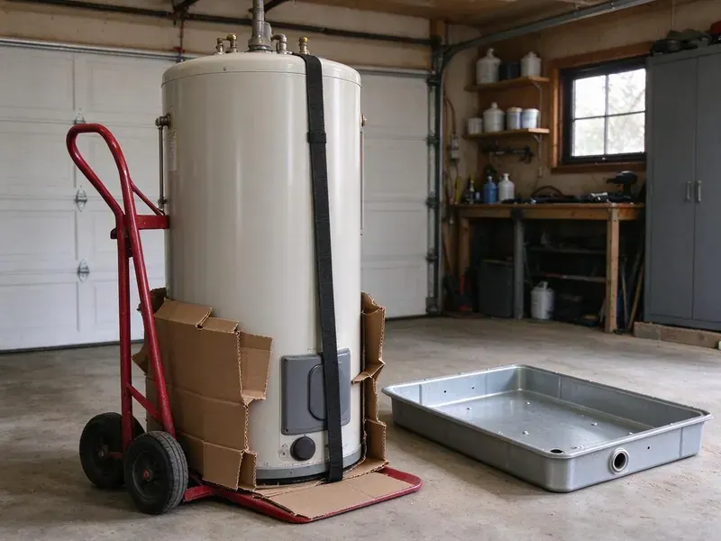

Basement Sump Pump Installation in Eau Claire, WI
Safeguard your home from water damage with professional basement sump pump installation in Eau Claire, WI. We make sure your foundation stays dry.
- Upfront Flat-Rate Pricing
- Battery Backup Options
- Licensed, Insured Plumbers
- Local Wisconsin Company
Expert Sump Pump Installation Services in Eau Claire, WI.
Call now and a licensed plumber will size, set and test your new basement sump pump, in many cases the same day.
Your Go-To for Basement Sump Pump Installation in Eau Claire, WI
HKV Plumbing focuses on professional basement sump pump installation across Wisconsin, helping homeowners in Eau Claire prevent costly water damage. Boilers, furnaces and water heaters work hard through the winter, so seasonal maintenance helps prevent failures during deep cold. A reliable sump pump is key for keeping your basement dry and protecting your foundation.
Our expertise includes:
- Pit excavation and liner installation through concrete slabs and hard soil
- Perimeter drainage system integration
- High-capacity sump pump systems

Additional Plumbing Installation Services in Eau Claire, WI
We install water heaters, pumps, lines, and fixtures across Eau Claire, WI with careful, permitted work that passes inspection the first time.


Customers
Why Choose HKV Plumbing for Basement Sump Pump Installation in Eau Claire, WI?
Our experience with the many foundation types found in Eau Claire means a precise and effective sump pump installation tailored to your home's needs.
- Quality Equipment, We install only durable, high-performance sump pumps from trusted manufacturers.
- Flood Prevention, A properly installed sump pump prevents costly water damage to your basement and its contents.
- Local Expertise, We know the drainage and soil conditions that affect Eau Claire basements.
Citywide Coverage
From residential homes to light commercial properties in Eau Claire, HKV Plumbing provides dependable basement sump pump installation. We keep service quality consistent across the entire area.
Experienced Team
The team installs primary pumps, backup systems and alarms regularly, so they know which brands hold up and which fail early. They will explain your options in plain terms and leave you with a working test routine.
Safety-First Approach
Safety and adherence to local plumbing codes are paramount for every basement sump pump installation we perform. We ensure proper electrical connections, discharge routing and pit construction to prevent future issues and protect your home.
Trusted Certified Eau Claire Plumbing Services Professionals
At HKV Plumbing, we take pride in providing certified plumbing services throughout Eau Claire, WI. Backed by recognized industry credentials, our experienced plumbers combine technical skill with genuine customer care. Whether it is repair, installation, or maintenance, we follow strict safety and quality standards to deliver lasting results you can trust.
Call Us Now PHCC Plumbing Contractor Recognition
PHCC Plumbing Contractor Recognition Better Business Bureau (BBB) Accreditation
Better Business Bureau (BBB) Accreditation Angi Certified Pro
Angi Certified Pro ISO 9001 Quality Management Certification
ISO 9001 Quality Management CertificationDependable Basement Sump Pump Installation Services in Eau Claire, WI
Primary Sump Pump Replacement in Eau Claire
If your existing sump pump is old, failing or no longer adequate for your home, HKV Plumbing offers expert primary sump pump replacement. We can quickly remove your old unit and install a new, more efficient model, lowering the risk of future flooding. Our plumbers assess your current setup, recommend fitting replacements and handle a seamless changeover. This service is essential for keeping effective flood protection in your Eau Claire home.

Submersible Sump Pump Installation in Eau Claire, WI
Submersible sump pumps sit directly in the sump pit, submerged in water, which makes them quieter and less intrusive. They are powerful and effective for basements that take on a lot of water. Our team in Eau Claire, WI will install your submersible pump with precision, making sure of proper sealing, discharge piping and electrical connections for quiet, dependable operation, which matters most in finished basements.
Pedestal Sump Pumps in Eau Claire
Pedestal pumps keep the motor above the pit, which makes them easier to service and a solid fit for narrow pits in older homes. They usually last a long time because the motor never sits in water. The tradeoff is more noise and a less finished look, so we usually recommend them for utility rooms rather than living spaces. We install them with a rigid discharge, a quality check valve and a float rod set to your pit depth.
Discharge Line and Check Valve Installation in Eau Claire
A great pump is useless if the water it moves runs right back toward the foundation. We route rigid PVC discharge pipe out of the basement and extend it at least 10 feet from the house or into a pop-up emitter or dry well. A spring or swing check valve keeps the column of water from dropping back into the pit after every cycle, which saves wear on the motor. Insulating pipes on exterior walls, shutting off outdoor faucets and keeping garages warm help prevent most freeze damage. Where lines can freeze, we add a freeze-resistant outlet so ice cannot block the discharge.
Emergency Sump Pump Installation in Eau Claire, WI
If you are facing an immediate flooding threat or your existing sump pump has failed, HKV Plumbing offers emergency basement sump pump installation in Eau Claire, WI. We understand the urgency of protecting your home from water damage and will dispatch a skilled plumber quickly to assess the situation and install a new, reliable sump pump. Do not let a failing pump lead to disaster.
Sump Pump Pit Installation in Eau Claire, WI
A properly built sump pit is fundamental to an effective sump pump system. If your basement lacks a suitable pit or needs an upgrade, HKV Plumbing provides expert sump pit installation. We carefully excavate and prepare the pit to the correct dimensions and depth for proper drainage and pump function. This first step is critical for any new sump pump installation and limits the sediment buildup that can damage the pump.
Sump Pump Alarms and Smart Monitoring in Eau Claire, WI
A high water alarm is an affordable part that gives you warning before water reaches the floor. We install standalone alarms or Wi-Fi monitors that send a text if the water level rises, the pump fails or power drops. These are a favorite with homeowners who travel or own second homes. We test the float trigger in front of you so you know what the alarm sounds like.

New Sump Pit Excavation in Eau Claire
If your basement has never had a pump, we start by locating the low point where water collects. We saw cut the slab, excavate a pit roughly 18 to 24 inches wide and 24 to 30 inches deep, and set a perforated or solid liner depending on whether we are collecting groundwater or surface seepage. Gravel goes around the liner to help water flow in while keeping fine soil out. We then patch the slab flush with new concrete so the floor stays clean and level.
Basement Sump Pump Installation Near Me in Eau Claire, WI
HKV Plumbing is proud to serve homeowners in Eau Claire and the surrounding communities. We are the trusted choice for basement sump pump installation, offering prompt, professional service right in your neighborhood. Our commitment to quality means your home protected against flooding, providing peace of mind.
If you searched for a basement sump pump installer near me after spotting water on the floor, give us a call before the next storm rolls in. We keep pumps, liners and check valves stocked so we can respond quickly. Most installs in existing pits are finished in a few hours.
HKV Plumbing at a Glance
- Licensed and insured plumbers serving Eau Claire, WI
- Same-day appointments and 24/7 emergency response
- Upfront, flat-rate pricing before work begins
- 4.8-star rated by 448+ Wisconsin customers
Eau Claire Map
Eau Claire Information
- Population
- 70,542
- Area codes
- 715/534/608
- Service area
- Eau Claire and communities within 40 miles
- Nearby
- La Crosse, Wausau, Oshkosh, Appleton
Glacial soils in Wisconsin range from heavy clay to sand and gravel, which affects how water moves around foundations and buried lines. In Eau Claire, WI, a properly installed sump pump keeps that water from collecting against your foundation and seeping into the basement.
Expert Services
Trust our professionals for reliable HKV Plumbing solutions in Eau Claire, WI.
Our Specialized Plumbing Services in Eau Claire, WI
At HKV Plumbing, we provide a complete range of plumbing services across Eau Claire, WI. From leak detection to full system installations, our team ensures fast, precise, and affordable service for both residential and commercial properties. Explore our core services below:


How Our Basement Sump Pump Installation Process Works in Eau Claire, WI
Our process is straightforward and built around getting your basement protected quickly.
Request a Quote
Call (414) 432-4641 and tell us where water is coming in and whether you already have a pit. We will schedule a visit and give you a clear price before any work starts.
Inspect and Size
We check the pit, inflow, vertical lift and electrical supply, then recommend a pump and backup option. You approve the plan and the price in writing.
Install and Test
We set the pump, check valve and discharge line, then fill the pit to confirm the float and flow work properly. We show you how to test the system each season.
Frequently Asked Questions About Basement Sump Pump Installation in Eau Claire
Replacing a pump in an existing pit usually runs $500 to $1,200 including the pump and check valve. Installing a new pit through the slab generally falls between $1,500 and $3,500, and adding a battery backup adds about $600 to $1,500.
A primary sump pump is your main defense against basement flooding, designed to handle everyday water removal. A secondary sump pump, often a battery-powered backup, serves as an emergency system that kicks on if the primary pump fails, loses power or is overwhelmed by excess water. Both work together for the best protection.
HKV Plumbing offers a full warranty on our basement sump pump installations, covering both parts and labor. The specific warranty period will be spelled out in your service agreement. We stand behind our work and the quality of the products we install in your Eau Claire home.
In many areas, including Eau Claire, a plumbing permit may be required for new sump pump installations or major replacements to confirm compliance with local building codes. HKV Plumbing will help you navigate the permit process and make sure all work is up to code.
Swapping a pump in an existing pit typically takes two to three hours. A new pit with slab cutting and concrete patching usually takes most of a day.
We install a wide range of high-quality, reliable sump pump brands, including Zoeller, Wayne, Little Giant and Liberty Pumps. We can help you pick the best brand and model for your budget and water management needs in your Eau Claire home, considering horsepower and features.
It is recommended to test your sump pump every 2 to 3 months, especially before and after the rainy season. Simply pour a bucket of water into the sump pit to make sure the pump activates, drains the water and shuts off properly. Regular testing helps catch issues early.
Heavy summer rain and fast spring snowmelt can flood basements and overwhelm sewer systems in many Wisconsin communities. Because storms and power outages tend to arrive together, a battery backup sump pump is highly recommended. It provides crucial protection by switching on automatically when the main power fails, so your basement stays dry even without electricity. It is a wise investment for peace of mind.
What People Are Saying About Our Plumbing Experts?

Daniel K.
A pipe burst at 11 pm and they actually answered. The plumber showed up within the hour, shut everything down, and had us back to normal the next morning. Could not ask for more.
Emergency Plumbing · Oshkosh, WI
Sofia M.
Two new toilets installed in one visit, no mess left behind, and the tech even adjusted a faucet he noticed was dripping. Fair pricing and really friendly.
Toilet Installation · Wausau, WI
Mark T.
When our office needed drain cleaning, HKV Plumbing provided quick, reliable service. The plumber arrived on time and made sure every drain flowed perfectly before leaving. Very satisfied.
Drain Cleaning · Green Bay, WI
Patricia H.
We had a slab leak that two other companies could not find. HKV Plumbing located it in under an hour, explained our options, and the price matched the quote to the dollar.
Slab Leak Repair · Eau Claire, WI
Robert G.
The trenchless sewer replacement saved our front yard. They walked us through the camera inspection footage first so we knew exactly what we were paying for.
Sewer Line Replacement · Wausau, WI
Emily R.
I called HKV Plumbing for plumbing repair, and the technician was fast, polite, and thorough. They explained the problem clearly and fixed it the same day. I will definitely hire them again. Highly recommended!
Plumbing Repair · Eau Claire, WI